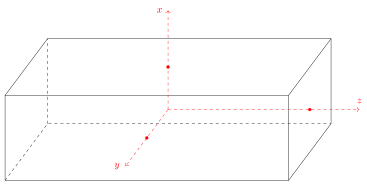
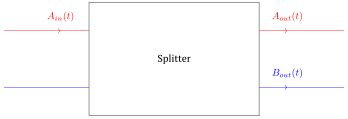
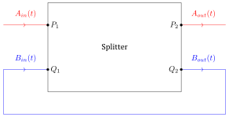
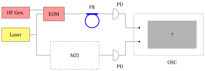
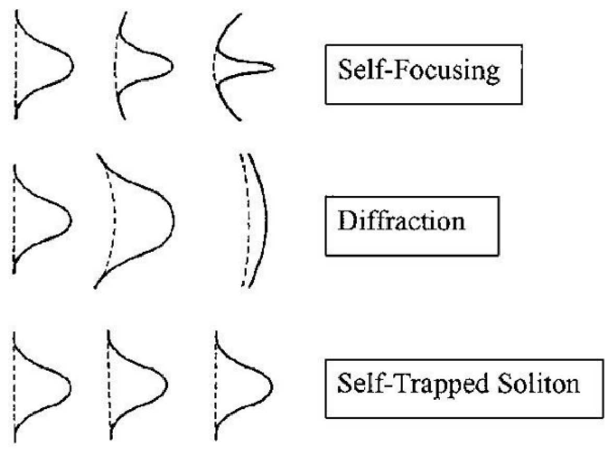

This task deals with methods for high-precision frequency measurements. During the solution, you will learn two measurement methods: signal modulation (Part C) and frequency comb (Part D).
Why do you need more precision?
In the framework of classical physics, any measurement is a comparison with a standard. As a frequency standard we will use the natural frequencies of a ring optical resonator, because today the best resonators are ring resonators. And the higher the quality, the more accurate is the value of the reference natural frequency. In Part B, you will learn more about ring resonators with the example of a ring fiber optical resonator. In Part A, you will derive the theory of wave propagation in the optical fiber from which the resonator described in Part B is made. At the very end of the problem there are reference materials: Maxwell’s equations and differential operators. If you know all the physical laws that are included in the Olympiad program, you will not need reference materials to solve the problem.
Equations of EM wave propagation The electromagnetic field at each point of space is described by four vectors: $\vec E(\vec r, t)$, $\vec H(\vec r, t)$, $\vec D(\vec r, t)$, $\vec B(\vec r, t)$ — electric field strength, magnetic field strength, electric induction and magnetic induction. These vectors are related to the polarisation $\vec P$ and magnetisation $\vec M$ of the medium by the relations:
\[\vec D = \varepsilon_0\vec E + \vec P,\qquad \vec B = \mu_0(\vec H + \vec M),\]where $\varepsilon_0$ is the electric constant and $\mu_0$ is the magnetic constant.
Use the following approximations when solving the problem:
EM wave theory. By applying the rot operator to Maxwell’s equations, Faraday’s induction law in differential form and the theorem on the circulation of magnetic field strength in differential form (see References), we obtain the basic equations of electromagnetic wave propagation:
\[\Delta\vec E = \mu_0\frac{\partial^2\vec D}{\partial t^2},\qquad \Delta\vec H = \varepsilon_0\frac{\partial^2\vec B}{\partial t^2}.\]In Parts A, B, C, we will assume that the polarization depends linearly on the electric field strength: $\vec P = \varepsilon_0(\varepsilon(\omega) - 1)\vec E$, where $\varepsilon(\omega)$ is the dielectric permittivity of the medium, which usually depends on the frequency of the electromagnetic wave in the medium. The dielectric permittivity of vacuum is equal to 1.
So, the equations of propagation of electromagnetic waves can be written in this form:
\[\Delta\vec E = \mu_0\varepsilon\varepsilon_0\frac{\partial^2\vec E}{\partial t^2},\qquad \Delta\vec H = \mu_0\varepsilon\varepsilon_0\frac{\partial^2\vec H}{\partial t^2}.\]
A plane monochromatic electromagnetic wave of frequency $\omega$ propagates along a dielectric waveguide along the $z$-axis (fig. 1), which is a rectangular parallelepiped of material with dielectric constant $\varepsilon(\omega)$ with sides $a$, $L_1$ and $L_2$. $L_1, L_2 \to \infty$ and are much larger than any characteristic lengths in this problem.
Let’s introduce the Cartesian coordinate system $Oxyz$. $O$ coincides with the center of the parallelepiped. The edges of length $L_1$ are parallel to the $z$-axis, of length $a$ — to the $x$-axis, of length $L_2$ — to the $y$-axis. $(\hat x, \hat y, \hat z)$ is a right triple.
Consider a wave polarized parallel to the $y$-axis: $\vec E \parallel \hat y$. We will look for the solution for the field $\vec E$ in the waveguide in the following form:
\[\vec E(\vec r, t) = E_0\,\mathrm{Re}\left(A(x, y)\exp(i\omega t - i\beta z)\right)\hat y,\]where $E_0$ has the dimensionality of the electric field, and $A(x, y)$ is a dimensionless complex quantity that contains information about the ratio of amplitudes and phase differences of the field at different points of the waveguide. Without restriction of generality $A(0, 0) = 1$.
Let us also consider that $L_2 \gg a$, so it will be assumed that $\partial A/\partial y \ll \partial A/\partial x$, and hence $A$ is only dependent on $x$.
The solution for $A(x)$ can be sought in the form:
\[A(x) = \begin{cases} \cos(k_{in}x), & |x| < a/2\\ C_1\exp(k_{out}x) + B\exp(-k_{out}x), & x > a/2\\ B\exp(k_{out}x) + C_2\exp(-k_{out}x), & x < -a/2 \end{cases}\]where $k_{in} > 0$, $k_{out} > 0$.
To find $B$, we need to write down the boundary conditions for the boundary $x = a/2$ (for the boundary $x = -a/2$ we get the same equations because $A(x)$ is an even function).
Now we need to derive an equation for finding $\beta(\omega)$. For this purpose we can write another boundary condition — for $\vec H$.

The radiation from the external laser enters a quadrupole beam splitter, which is an optical system with two pairs of coupled channels: $(P_1, P_2)$ and $(Q_1, Q_2)$.
A monochromatic wave with complex amplitude $A_{in}(t)$ entering the splitter is split into two outgoing waves of smaller amplitude propagating in the same direction. The first of them propagates along the same pair channel as the incoming wave, and its complex amplitude is $A_{out}(t) = -r_sA_{in}(t)$. The second wave propagates through the channel of the other pair and its amplitude is $B_{out}(t) = it_sA_{in}(t)$. Waves incident on $Q_1$ are divided similarly to those incident on $P_1$. Consider that $r_s$ and $t_s$ are real positive numbers and $t_s \ll 1$.
A fiber resonator can be assembled with the splitter. In order to do so, it is necessary to connect the channels $Q_1$ and $Q_2$ with a loop of single-mode fiber (the equation for $\beta(\omega)$ has the only solution for the frequencies considered in this part) of length $L$. The time for light of frequency $\omega$ to travel through the loop is $\tau(\omega)$. Also note that due to material absorption, the amplitude of the wave in the loop decreases by a factor $1/\kappa$ for each round in the loop ($1 - \kappa \ll 1$). For all tasks in Parts B and C neglect backscattering.

Let a monochromatic wave $A_{in}(t) = A_0e^{i\omega t}$ from an external laser be incident on the input of channel $P_1$.
Assume the system has come to the steady-state regime, i.e. the absolute values of complex field amplitudes at any point are constant, and the phase difference of the field at two points does not change with time. Then for any amplitude $E_i$ (instead of $E_i$ we can substitute $A_{in}, A_{out}, B_{in}, B_{out}$) the expressions are valid:
\[E_i(t - t') = e^{-i\omega t'}E_i(t).\]Today it is possible to create a fiber resonator based on a beam splitter with peak sharpness of about $5\cdot 10^7$ near the frequency corresponding to the wavelength of $1550\ \mathrm{nm}$. And if we use a ring microresonator made of fused quartz, we can obtain a sharpness of $10^9$. Resonators with such small losses open us a wide range of possibilities for accurate frequency measurements.
That is, with a quartz microresonator we can obtain a spectral line with an average wavelength of $1550\ \mathrm{nm}$ with a width of only $0.000002\ \mathrm{nm}$!
Consider the setup for calibrating the interferometer shown in Fig. 1. Now the laser frequency varies smoothly with time (the derivative $\dot\omega\tau$ is much smaller than the inverse time for establishing the stationary mode in the resonator), and its power is constant.
\[\omega(t) = \omega_0 + \alpha t\]The radiation flux from the laser is split into two arms by another beam splitter similar to the splitter in Part B. The first arm of the optical circuit contains a Mach‑Zehnder calibrated interferometer and a photodetector that measures the power coming out of it, and the second arm contains a resonator and a similar photodetector. The signals from the photodetectors are fed to an oscilloscope. The signal of the photodetector is proportional to the radiation power. The oscilloscope shows the time dependence of the photodetector voltages (not XY mode!).

Laser parameters:
Resonator parameters:
Parameters of the interferometer to be calibrated:
Now an amplitude electro‑optic modulator is connected to the second arm. Its amplitude bandwidth is independent of the radiation wavelength and is equal to:
\[f_{EOM}(t) = \beta + (1 - \beta)\cos(\Omega t),\qquad \Omega \ll \omega_0,\qquad \beta < 1.\]For precision measurements and high-frequency communication, it is necessary to obtain very short light pulses that do not change their profile with time (such pulses are called solitons). This is not possible in linear optics because the dielectric constant and the dispersion constant depend on frequency, and the pulses “blur” due to dispersion.
Fortunately, the approximations of linear optics do not work for all materials, and the resulting nonlinearities can compensate for the undesirable effects associated with dispersion.

In Part D, we will assume that the projection $P_i(\vec r, t)$ of the polarisation vector on an arbitrary axis $i$ depends on the projection of the electric field strength $E_i(\vec r, t)$ at the same point at that instant of time as follows:
\[P_i(\vec r, t) = \varepsilon_0\left((\varepsilon(\omega) - 1)E_i(\vec r, t) + \chi E_i^3(\vec r, t)\right).\]The pulse is a sum of electromagnetic waves with frequencies very close to the carrier frequency ($\omega \approx \omega_0$), and propagation constants very close to the propagation constant of the carrier wave $\beta \approx \beta_0 = \beta(\omega_0)$:
\[\vec E(\vec r, t) = \mathrm{Re}\left(E_0F(z, t)A(x, y)\exp(i\omega_0t - i\beta_0z)\right)\hat y.\]Here $\beta(\omega)$ is the propagation constant found in Part A, $A(x, y)$ is also taken from Part A, $F(z, t)$ is a complex function that contains information about the pulse profile.
The function $\beta(\omega)$ can be approximated by a quadratic function:
\[\beta = \beta_0 + \beta_1(\omega - \omega_0) + \beta_2(\omega - \omega_0)^2/2.\]We can substitute this type of solution into the wave equation, which was derived in the introduction, and by mathematical transformations beyond the school program, obtain the equation for $F(z, t)$:
\[\frac{\partial F}{\partial z} + \beta_1\frac{\partial F}{\partial t} + \frac{i\beta_2}{2}\frac{\partial^2F}{\partial t^2} - i\gamma|F|^2F = 0.\]The pulse will propagate with group velocity, so it is reasonable to move to a frame of reference that will also move with group velocity. In this system the last equation will be rewritten in the form:
\[\frac{\partial F}{\partial z} + \frac{i\beta_2}{2\beta_1^2}\frac{\partial^2F}{\partial s^2} = i\gamma|F|^2F,\]where $s = t/\beta_1 - z$ is the spatial coordinate in the soliton reference frame, and $\gamma$ is the cubic nonlinearity coefficient, which is proportional to $\chi$ (and has the same sign). The resulting equation is called the Nonlinear Schrödinger equation (hereafter referred to as the NLSE). In the Part D assignment, you will analyze the NLSE. You will need to express all answers through its coefficients.
Let one of the natural frequencies of the FR be $\omega_0$. The length of the FR is such that there are very many other natural frequencies in the range from 0 to $\omega_0$. Then the following equality is true for the other natural frequencies: $\omega_\mu \approx \omega_0 + D_1\mu + D_2\mu^2/2$, where $\mu$ is an integer and $\omega_0 \gg D_1 \gg D_2$.
Let us introduce a Cartesian coordinate system $Oxyz$ in space. The unit vectors along the corresponding axes are $\hat x, \hat y, \hat z$ and form the right triple.
Each equation is written first in integral form and then in differential form: